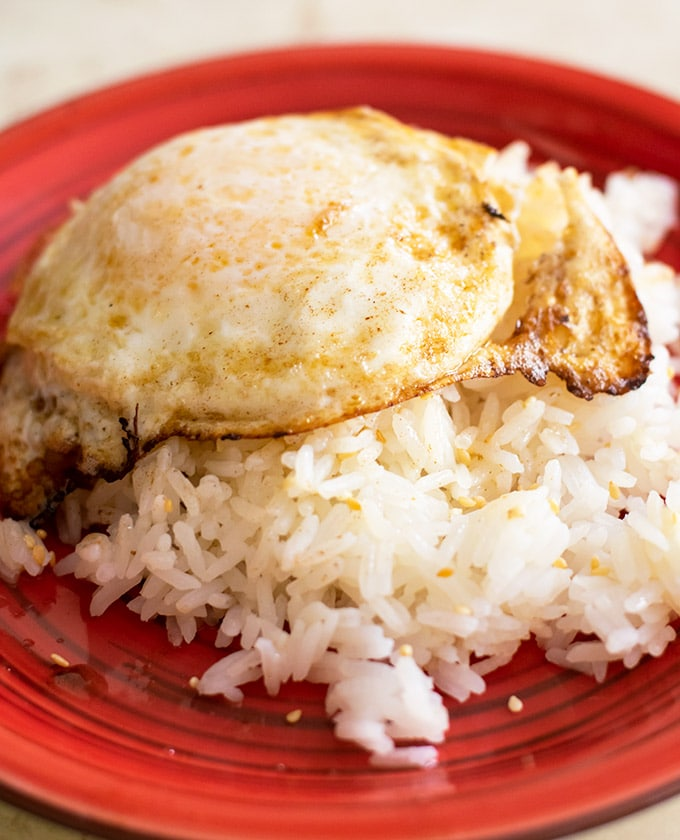

Fried Egg on Rice

Description
Are you ready for the most depressing meal you will ever eat?
Well get ready for this easy, cheap and sad meal. A sad meal made palletable by Hot Sauce
Ingredients
- 1 whole egg
- 1 cup white rice
- Hot sauce of your choosing
Steps
- Add rice and water into ricer cooker and let cook. *If you dont own a rice cooker i don't know how to help you sorry. I can't actually cook rice
- Bring a pan to high heat and add egg. Cook to your preffered runniness
- Put rice and egg on a plate together and smother in hot sauce
- You are ready to eat! Try to not cry into your bowl while you think of more delicious food